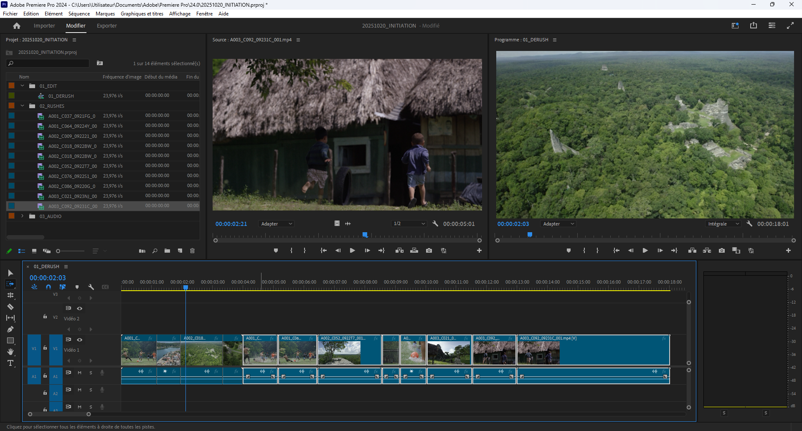
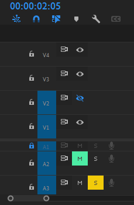
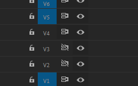
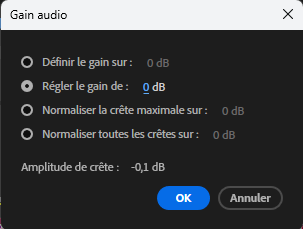

Initiation
NB: les commandes écrites ici sont pour Windows sont équivalentes pour Mac, il faut remplacer Ctrl par Cmd et Alt par Option.
Démarrage
- Dans le panneau projet, créer trois chutiers :
- 01_EDIT
- 02_RUSHES
- 03_AUDIO
- 04_HABILLAGES
- Glisser les rushes dans le dossier 02_RUSHES (on peut le faire √† l’import, dans l’option Nouveau chutier, on peut aussi en profiter pour cr√©er une s√©quence Bout √† bout)
- Privil√©gier l’affichage en mode liste des chutiers plut√¥t qu’en mode Ic√¥ne, ne serait-ce que pour √©conomiser les ressources de l’affichage des images
- Glisser les séquences (timelines) dans le dossier 01_EDIT
block-beta
columns 4
t["01:30:25:10"]:4
HH MM SS Images
Afin d’√©viter que le panneau Projet ouvre un nouveau panneau √† chaque fois qu’on souhaite ouvrir un chutier, aller dans Edition > Pr√©f√©rences > G√©n√©rales, dans l’encadr√© Chutiers changer Double-clic en “Ouvrir dans la fen√™tre”.
En mode liste, on peut aussi modifier les m√©tadonn√©es qu’on affiche pour se limiter √† la d√©finition, la dur√©e, la fr√©quence par exemple et enregistrer ces pr√©f√©rences.
Créer une séquence
- Dans le panneau projet, sur le bouton *Nouvel élément"
- Choisir Séquence dans le menu contextuel
- Cliquer sur l’onglet R√©glages de la fen√™tre Nouvelle s√©quence
- Choisir Personnalisé sur le menu déroulant Mode de montage
- Régler les paramètres de la séquence en fonction du contexte du projet
À noter pour gérer les réglages plus rapidement, on peut glisser / déplacer un rush représentatif des paramètres souhaités sur le bouton Nouvel élément.
Source
Dans la fen√™tre source, sous la visionneuse il y a deux ic√¥nes Pellicule et Waveform qui permettent de ne s√©lectionner que la vid√©o ou que l’audio de la s√©lection.
On peut n’ajouter que l’audio ou la vid√©o en d√©s√©lectionnant la source (A1 ou V1).
Outils
Sélection par défaut V
Dans ce mode on peut sélectionner les vidéos et surtout raccourcir les plans :
- par d√©faut, l’ic√¥ne est rouge :
- un raccourcissement laissera un blanc
- un rallongement détruira les plans connexes
- en maintenant Ctrl
- √† la fin ou au d√©but d’un plan, l’ic√¥ne devient jaune et l’outil devient Allongement
- la souris plac√©e entre deux plans, l’outil devient un d√©placement de coupe
Sélection en amont A
Permet de s√©lectionner toutes les pistes qu’il y a apr√®s la souris 
- Maintenir Maj permet de ne s√©lectionner qu’une seule piste
- Maj + A retourner la direction de la s√©lection, s√©lectionne tout ce qu’il y a avant la souris (rappuyer sur A pour revenir √† la s√©lection vers la droite)
Allongement B
- Permet de réduire une vidéo sans laisser de vide, raccorde le reste de la timeline
- Peut également rallonger le plan sans destruction des vidéos connexes
Déplacement de la coupe N
Entre deux plans, raccourci l’un et rallonge l’autre
Modification de la vitesse R
Permet d’acc√©l√©rer ou de ralentir un plan en s√©lectionnant / d√©pla√ßant les bords de la vid√©o. Privil√©gier le raccourcis Ctrl + R qui permet de pr√©cis√©ment d√©finir la nouvelle vitesse.
Cette fenêtre permet de modifier précisément la vitesse et la durée du clip. Si les deux sont liés, une vitesse à 200% réduira de moitié le clip, une vitesse à 50% doublera la durée. On peut cependant délier la vitesse et la durée, le logiciel ira récupérer des images sur la suite de la source si possible et nécessaire. Une vitesse négative inversera le déroulement de la vidéo.
L’option Propagation (d√©calage des √©l√©ments de fin) permet de ne pas cr√©er de trou dans la timeline ou d’√©craser les √©l√©ments suivants.
Cutter C
Coupe un plan ou plusieurs plans, peut √™tre utilis√© avec la t√™te de lecture dans n’importe quel mode avec Ctrl + K/C qu’on aura modifi√© en C dans Raccourcis clavier (Ajouter une coupe) pour remplacer le passage √† l’outil cutter. Pr√©cision importante, l’outil coupe soit le plan s√©lectionn√©, soit les plans des pistes s√©lectionn√©s.
Déplacer la sélection Y
Permet de déplacer la position du in et du out de la vidéo sans changer la durée ou la position du plan dans la timeline.
Déplacer le plan U
Fais glisser le plan dans la timeline sans modifier la position du in et du out de la vidéo en écrasant éventuellement les plans connexes. Ne modifie pas la timeline.
Outil plume P
Utile au masking ou l’utilisation de keyframes, mais ce genre d’actions est plus confortable sur Adobe After Effects.
Calques
Comme l’outil plume mais avec des formes pr√©d√©finies : rectangle, ellipse, polygone.
Main H
Déplacement manuel de la timeline ou déplacement. Permet également de déplacer la source ou le programme. En mode Sélection par défaut, on peut utiliser le bouton molette maintenu également.
Zoom Z
Zoom dans la timeline. Alt pour d√©zoomer. Meilleurs raccourcis dans d’autres modes :
- + pour dézoomer la timeline
- - pour dézoomer la timeline
- Alt+ molette pour zoomer / dézoomer la timeline
Texte T
Permet d’ajouter du texte dans le panneau programme.
Magnétisme S
Magnétise / démagnétise les plans les uns aux autres.
Marques M
Ajoute des marques sur la timeline ou sur les plans s√©lectionn√©s. Pour √©viter qu’elles changent de place en fonction des modifications de la s√©quence, aller dans le menu > Marques > d√©cocher Les marques suivent la s√©quence.
La timeline
- Déplacement horizontal :
- la molette
- les touches ⬅ / ➡ du clavier pour un déplacement précis
- Maj + ⬅ / ➡ permettent un déplacement plus rapide
- flèche du haut / flèche du bas pour un déplacement de cut en cut
- touche Début et touche Fin pour aller au début ou à la fin de la timeline
- Déplacement vertical : Ctrl + molette
- Changer la hauteur des pistes : dans la zone de description des pistes,
- Maj + molette change la taille de toutes les pistes audio ou vidéo
- Alt + molette change la taille de la piste sur laquelle est positionnée la souris
- Double-clic sur une piste change sa taille selon deux hauteurs prédéfinies
- Options de pistes :
- Activer visibilité de la piste permet de masquer une piste vidéo dans la visionneuse Programme
- Mute d√©sactive le son d’une piste audio
- Solo n’active que cette piste audio et mute les autres
- Cadenas verrouille la piste, donc les éléments audio ou vidéo qui y sont ne bougeront plus 
- Activer / Verrouillage de synchronisation active ou désactive la synchronisation des pistes. Si une piste est déplacée, les pistes désynchronisées ne seront pas impactées 
Différence de tailles
Si on dans le menu contextuel d’un plan moins d√©fini que la s√©quence, on peut ajuster ou d√©finir le plan en fonction de la taille de l’image. D√©finir va modifier l’√©chelle dans les options d’effet ajuster va juste zoomer dans l’image.
Libellés
Pratiques de changer la couleur des plans pour rapidement les différencier notamment dans le panneau Projet. On a utilisé le clavier numérique pour binder des libellés rapidement.
Match Frame
En appuyant sur F dans la s√©quence, √ßa permet d’activer le Match Frame et de retrouver le plan dans la source qui sera pr√©s√©lectionn√© avec un in et un out avec l’exact m√™me moment que le plan de la s√©quence. Fonctionne avec l’audio et la vid√©o.
D√©tection d’un montage de sc√®ne
Dans le menu, aller dans El√©ment > D√©tection d’un montage de sc√®ne, ouvre une fen√™tre, choisir au moins la premi√®re case. Le logiciel va analyser l’√©l√©ment vid√©o et d√©couper chaque plan. Attention, il peut y avoir des erreurs m√™me si cette fonctionnalit√© devient de plus en plus performante avec les versions.
Auto-Save
Dans Edition > Pr√©f√©rences > Enregistrement automatique, on peut choisir tous les X minutes Premiere Pro fais une sauvegarde du projet et le nombre maximum du projet. Par d√©faut, on enregistre tous les 5 minutes jusqu’√† 20 projets, donc on peut revenir jusqu’√† 1h40 en arri√®re.
Top & Tail
Supprime toute une partie du plan depuis l’emplacement de la t√™te de lecture,
- jusqu’au d√©but avec Top Q
- jusqu’√† la fin avec Tail W
Gestion du son
G pour modifier le gain audio d’un ou plusieurs audios s√©lectionn√©s. 
Sur l’audio, on peut directement ajouter des images cl√© avec Ctrl + Clic, et faire varier le gain de ces diff√©rents points.
On peut g√©rer √©galement la tonalit√© de l’audio avec l’effet Transpositeur.
Réduire les demi-tons rendra le son plus grave, le mettre au-dessus de 0 au contraire donnera un son plus aigu. Les centièmes sont juste une manière plus précise de gérer les demi-tons.
Calque d’effet
Nouvel √©l√©ment > Calque d’effet qui s’ajoute sur la timeline. Tous les √©l√©ments sur les pistes inf√©rieures au calque subiront les effets, comme un noir et blanc ou colorim√©trie par exemple.
Raccourcis utiles
- Ctrl + - réduire les lignes de la timeline
- Ctrl + + agrandir les lignes de la timeline
- j, k et l pour circuler dans la timeline
- Double clic dans le panneau projet ou Ctrl + i pour “importer” (lier) de nouveaux √©l√©ments
- Ctrl + Maj + X pour annuler le in et out dans le panneau source
- Ctrl + glisser/d√©placer un plan dans la timeline permet de l’intercaler facilement √† un autre droit
- Maj+Suppr supprime un élément dans la timeline et raccorde les éléments
- % met le panneau survol√© par la souris prend tout l’espace dans la fen√™tre Premiere Pro
- Ctrl + % met la visionneuse Programme en plein écran
- Ctrl + : créé un chutier
- Alt + ‚¨Ü / ‚¨á d√©place un plan d’une ligne √† l’autre
- Alt + ⬅ / ➡ déplace un plan sur une ligne
- Ctrl + Maj + X supprime les points in et out
- si une coupe involontaire a √©t√© faite Ctrl + Click en mode s√©lection par d√©faut (V) sur la coupe et Suppr. permet d’annuler la coupe
- Ctrl + V colle un plan dans la timeline par écrasement, Ctrl + Maj + V colle un plan en décalant les plans
- D pour s√©lectionner l’√©l√©ment sous la t√™te de lecture
- X pour placer le in et out autour de l’√©l√©ment sous la t√™te de lecture
- Maj + S pour mettre la lecture en sourdine (audio scrub)
Pour aller dans les différentes fenêtres
- Maj + & pour la fenêtre projet
- Maj + é pour la fenêtre effet
- Maj + " pour la fen√™tre s√©quence (permet √©galement de passer d’une s√©quence √† l’autre)
- Maj + ' pour la fenêtre programme